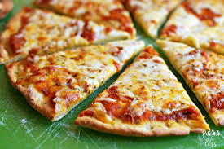

A recipe has no soul. You, as a cook, must bring soul to the recipe
Cookery is not chemistry. It is an art. It requires instinct and taste rather than exact measurement.
GOOD FOOD IS GOOD MOOD
PIZZA

Ingredients
1 1/2 cups (355 ml) warm water (105°F-115°F)
1 package (2 1/4 teaspoons) of active dry yeast
3/4 cups (490 g) bread flour
2 Tbsp olive oil (omit if cooking pizza in a wood-fired pizza oven)
2 teaspoons salt
1 teaspoon sugar
Steps to make pizza
Make the base: Put the flour into a large bowl, then stir in the yeast and salt. Make a well, pour in 200ml warm water and the olive oil and bring together with a wooden spoon until you have a soft, fairly wet dough. Turn onto a lightly floured surface and knead for 5 mins until smooth. Cover with a tea towel and set aside. You can leave the dough to rise if you like, but it’s not essential for a thin crust.
Make the sauce: Mix the passata, basil and crushed garlic together, then season to taste. Leave to stand at room temperature while you get on with shaping the base.
Roll out the dough: If you’ve let the dough rise, give it a quick knead, then split into two balls. On a floured surface, roll out the dough into large rounds, about 25cm across, using a rolling pin. The dough needs to be very thin as it will rise in the oven. Lift the rounds onto two floured baking sheets.
Top and bake: Heat oven to 240C/fan 220C /gas 8. Put another baking sheet or an upturned baking tray in the oven on the top shelf. Smooth sauce over bases with the back of a spoon. Scatter with cheese and tomatoes, drizzle with olive oil and season. Put one pizza, still on its baking sheet, on top of the preheated sheet or tray. Bake for 8-10 mins until crisp. Serve with a little more olive oil, and basil leaves if using. Repeat step for remaining pizza.
Enjoy
BURGER
Ingredients
1 tablespoon Worcestershire
1 or 2 cloves garlicpeeled and minced
About 1/2 teaspoon salt
About 1/4 teaspoon pepper
4 hamburger buns (4 in. wide)
About 1/4 cup mayonnaise
About 1/4 cup ketchup
4 iceberg lettuce leaves
rinsed and crisped 1 firm-ripe tomato, cored and thinly sliced 4 thin slices red onion
Steps to make burger
Dump your ground meat into a bowl. (We go for ground meat with around 20% fat.) Season it with salt, pepper, and whatever else you want; you can add spices, perhaps, or Worcestershire sauce, or shallots, or chiles.
Shape your burgers into patties, using your thumb to make an indentation in the center; this will keep the burgers from puffing up. Keep in mind that the burgers will shrink up a bit once you cook them, so make your patties a bit bigger than you want them later.
Oil your grill or a cast-iron pan, and grill or sear those patties. (How many times to flip them is up for debate -- but when I'm grilling, I flip once so I can get get those nice grill marks.) Cook them until your desired doneness (around 125-130ºF for medium rare, around 1 minute per side for each inch of thickness). But before you take them off the grill...
add your cheese and toast your buns. Let the cheese melt while the burgers are still on the grill; to speed things up, you can close the cover.
Once your burgers iare finished cooking, and your cheese is melty and your buns are nicely charred, throw some condiments and toppings on those burgers. Anything goes. (Really, anything goes.) Bite into it and let those juices run down your chin, and rejoice that it's summer. And then make another round, because now you know how.
Enjoy
CHICKEN
Ingredients
kilograms washed & dried chicken
3cups sliced onions
2 cups tomato
refind
turmeric
coorinder
Steps to make chicken
Place the chicken legs in a large zip-top bag
Make the marinade. Mix together the olive oil, salt, pepper, paprika, cumin, and cayenne pepper. Place the ingredients in a small bowl and stir them until they're thoroughly incorporated.
Pour the marinade over the chicken legs. Pour the marinade into the zip-top bag with the chicken and seal it. Remove as much air as possible from the bag and seal it. Turn it from side to side to ensure that all of the chicken is coated in the marinade. Then, place the bag on a sheet pan and refrigerate it for an hour or even overnight for best results. Turn the bag every few hours to keep the chicken freshly coated.
Prepare the grill. Brush the grill grate with olive oil to coat it. Then, heat the grill to 350ºF (175ºC).
Place the chicken on the grill. Cook the chicken until it's crispy and brown on both sides. Turn the chicken every few minutes to evenly cook both sides.


.jpg)
.jpg )
.png)